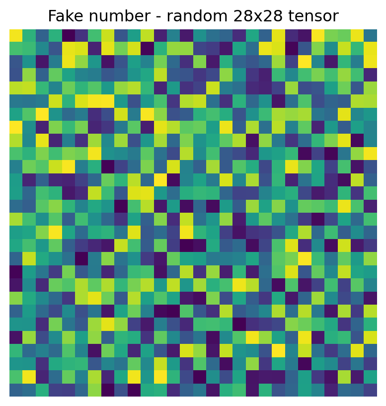

import os
import torch
from torch import nn
from torch.utils.data import DataLoader
from torchvision import datasets, transformsDefining the Network
Show imports
PyTorch allows us to create any neural network, using predefined building blocks from the module torch.nn. Every neural network we create should specify the forward method
class OurNeuralNetwork(nn.Module):
def __init__(self):
super().__init__()
# Define neural net structure here, so we can store weights in them.
self.flatten = nn.Flatten()
self.linear_relu_chain = nn.Sequential(
nn.Linear(in_features=28*28, out_features=512),
nn.ReLU(),
nn.Linear(in_features=512, out_features=512),
nn.ReLU(),
nn.Linear(512, 10)
)
def forward(self, input):
# Use neural net structure to pass input data through
input = self.flatten(input) # Shape: (28,28) -> shape: (784)
predictions = self.linear_relu_chain(input) # Shape: (784) -> shape: (512) -> shape: (512) -> shape: (10)
return predictionsLets instantiate it. In PyTorch, we also have to specify it on what device type we want to train our model. This allows for quicker training, depending on device type.
model = OurNeuralNetwork().to("cpu") # or cuda, mps, mtia, xpu
print("using cpu")using cpumodelOurNeuralNetwork(
(flatten): Flatten(start_dim=1, end_dim=-1)
(linear_relu_chain): Sequential(
(0): Linear(in_features=784, out_features=512, bias=True)
(1): ReLU()
(2): Linear(in_features=512, out_features=512, bias=True)
(3): ReLU()
(4): Linear(in_features=512, out_features=10, bias=True)
)
)Testing the Network
Lets simulate an 28x28 pixel image with some random numbers
shape = (1, 28, 28)
fake_image = torch.rand(shape, device="cpu") # the tensor needs to be on the same device as the modelShow plotting code
import matplotlib.pyplot as plt
plt.imshow(fake_image.squeeze())
plt.axis("off")
plt.title("Fake number - random 28x28 tensor")
plt.show()
model_outputs = model(fake_image)Even though we specified nn.Linear(in_features=28*28), we set shape = (1, 28, 28) and not to (28, 28). This is because the model expects the first number to be the amount of images we use per batch of training. Since we are not actually training the model right now we set it to 1.
probabilities = nn.Softmax(dim=1)(model_outputs)
predicted_label = probabilities.argmax(1)
predicted_label.item()3Of course, the output is completely random, since the network was not trained and since the image was not actually a number.
Training and Evaluating the Network
Let’s train the network on the FashionMNIST dataset to classify images. For this we import the dataset using the code from a previous post explaining PyTorch Datasets and DataLoaders
training_data = datasets.FashionMNIST(
root="data",
train=True,
download=True,
transform=transforms.ToTensor()
)
test_data = datasets.FashionMNIST(
root="data",
train=False,
download=True,
transform=transforms.ToTensor()
)
train_dataloader = DataLoader(training_data, batch_size=64, shuffle=True)
test_dataloader = DataLoader(test_data, batch_size=64, shuffle=True)We need to specify 3 parameters:
Number of Epochs - How many times to iterate over the entire dataset.
Learning Rate - A scaling factor specifying how much to update the model parameters each iteration
Batch Size - How much examples to iterate over before updating parameters.
Per batch of images, model parameters are updated, until all images in the dataset have been seen. This process is repeated for the specified number of epochs.
learning_rate = 1e-3
batch_size = 64
epochs = 5In each epoch we also want to check the model performance (to see if it is improving). That is why we will build two loops.
Training Loop - Update parameters by showing model images with labels (from
train_dataloader)Checking Loop - Evaluate model performance with learned parameters from the training loop on new images (from
test_dataloader)
def train_loop(dataloader, model, loss_func, optimizer):
size = len(dataloader.dataset)
model.train() # Set model to training mode
# Update parameters each new batch
for batch, (images, labels) in enumerate(dataloader):
model_predictions = model(images)
loss = loss_func(model_predictions, labels)
# Compute gradient with backpropagation
loss.backward()
optimizer.step()
optimizer.zero_grad()
# Something to look at while model trains
if batch % 100 == 0:
loss, current = loss.item(), batch * batch_size + len(images)
print(f"loss: {loss:>7f} [{current:>5d}/{size:>5d}]")
def checking_loop(dataloader, model, loss_func):
size = len(dataloader.dataset)
number_of_batches = len(dataloader)
test_loss, correct_amount = 0, 0
model.eval() # Set model to check/test mode
with torch.no_grad(): # We don't need to update parameters anymore. This speeds up testing.
# This dataloader contains the test images
for images, labels in dataloader:
model_predictions = model(images)
loss = loss_func(model_predictions, labels).item()
test_loss += loss
predicted_labels = nn.Softmax(dim=1)(model_predictions).argmax(1)
correct = predicted_labels == labels
# Turn every 'True' into a 1, and sum over them, converting the resulting tensor to a python integer
correct_amount += correct.type(torch.float).sum().item()
test_loss /= number_of_batches
correct_amount /= size
print(f"Test Error: \n Accuracy: {(100*correct_amount):>0.1f}%, Avg loss: {test_loss:>8f} \n")Lets train our model, passing a loss function and optimizer.
loss_function = nn.CrossEntropyLoss()
optimizer = torch.optim.SGD(model.parameters(), lr=learning_rate)# Train the model
epochs = 10
for t in range(epochs):
print(f"Epoch {t+1}\n-------------------------------")
train_loop(train_dataloader, model, loss_function, optimizer)
checking_loop(test_dataloader, model, loss_function)
print("Done!")Show output
Epoch 1
-------------------------------
loss: 1.469673 [ 64/60000]
loss: 1.433510 [ 6464/60000]
loss: 1.416146 [12864/60000]
loss: 1.377274 [19264/60000]
loss: 1.353796 [25664/60000]
loss: 1.429164 [32064/60000]
loss: 1.270087 [38464/60000]
loss: 1.251621 [44864/60000]
loss: 1.361366 [51264/60000]
loss: 1.273360 [57664/60000]
Test Error:
Accuracy: 63.7%, Avg loss: 1.244470
Epoch 2
-------------------------------
loss: 1.250782 [ 64/60000]
loss: 1.358424 [ 6464/60000]
loss: 1.121522 [12864/60000]
loss: 1.036822 [19264/60000]
loss: 1.188575 [25664/60000]
loss: 1.127103 [32064/60000]
loss: 1.138114 [38464/60000]
loss: 1.059073 [44864/60000]
loss: 1.033557 [51264/60000]
loss: 1.098557 [57664/60000]
Test Error:
Accuracy: 65.0%, Avg loss: 1.083130
Epoch 3
-------------------------------
loss: 1.070835 [ 64/60000]
loss: 1.022191 [ 6464/60000]
loss: 1.005594 [12864/60000]
loss: 0.993012 [19264/60000]
loss: 1.047417 [25664/60000]
loss: 1.001495 [32064/60000]
loss: 1.095251 [38464/60000]
loss: 0.926997 [44864/60000]
loss: 0.960782 [51264/60000]
loss: 0.937367 [57664/60000]
Test Error:
Accuracy: 66.1%, Avg loss: 0.979457
Epoch 4
-------------------------------
loss: 0.900051 [ 64/60000]
loss: 1.099103 [ 6464/60000]
loss: 1.052053 [12864/60000]
loss: 0.843110 [19264/60000]
loss: 0.914962 [25664/60000]
loss: 1.017330 [32064/60000]
loss: 0.707650 [38464/60000]
loss: 0.890666 [44864/60000]
loss: 1.078490 [51264/60000]
loss: 0.758047 [57664/60000]
Test Error:
Accuracy: 67.3%, Avg loss: 0.909492
Epoch 5
-------------------------------
loss: 0.935071 [ 64/60000]
loss: 0.930360 [ 6464/60000]
loss: 0.886458 [12864/60000]
loss: 0.747989 [19264/60000]
loss: 0.919060 [25664/60000]
loss: 0.857149 [32064/60000]
loss: 0.808115 [38464/60000]
loss: 0.957309 [44864/60000]
loss: 0.915866 [51264/60000]
loss: 1.035016 [57664/60000]
Test Error:
Accuracy: 68.0%, Avg loss: 0.857042
Epoch 6
-------------------------------
loss: 0.711309 [ 64/60000]
loss: 0.731404 [ 6464/60000]
loss: 0.778495 [12864/60000]
loss: 0.826608 [19264/60000]
loss: 0.690381 [25664/60000]
loss: 0.793883 [32064/60000]
loss: 1.049005 [38464/60000]
loss: 0.860935 [44864/60000]
loss: 0.850578 [51264/60000]
loss: 0.894870 [57664/60000]
Test Error:
Accuracy: 69.2%, Avg loss: 0.820537
Epoch 7
-------------------------------
loss: 0.751307 [ 64/60000]
loss: 0.690765 [ 6464/60000]
loss: 0.885832 [12864/60000]
loss: 0.810388 [19264/60000]
loss: 0.656271 [25664/60000]
loss: 0.795354 [32064/60000]
loss: 0.873639 [38464/60000]
loss: 0.952544 [44864/60000]
loss: 0.621379 [51264/60000]
loss: 0.782824 [57664/60000]
Test Error:
Accuracy: 70.0%, Avg loss: 0.791091
Epoch 8
-------------------------------
loss: 0.706885 [ 64/60000]
loss: 0.791194 [ 6464/60000]
loss: 0.665691 [12864/60000]
loss: 0.586563 [19264/60000]
loss: 0.746921 [25664/60000]
loss: 0.670890 [32064/60000]
loss: 0.818113 [38464/60000]
loss: 0.725863 [44864/60000]
loss: 0.793836 [51264/60000]
loss: 0.689501 [57664/60000]
Test Error:
Accuracy: 71.0%, Avg loss: 0.764419
Epoch 9
-------------------------------
loss: 0.579552 [ 64/60000]
loss: 0.783948 [ 6464/60000]
loss: 0.766569 [12864/60000]
loss: 0.831361 [19264/60000]
loss: 0.964704 [25664/60000]
loss: 0.772870 [32064/60000]
loss: 0.836838 [38464/60000]
loss: 0.806005 [44864/60000]
loss: 0.795276 [51264/60000]
loss: 0.934505 [57664/60000]
Test Error:
Accuracy: 72.8%, Avg loss: 0.744880
Epoch 10
-------------------------------
loss: 0.493929 [ 64/60000]
loss: 0.790016 [ 6464/60000]
loss: 0.750857 [12864/60000]
loss: 0.762535 [19264/60000]
loss: 0.822756 [25664/60000]
loss: 0.723158 [32064/60000]
loss: 0.535035 [38464/60000]
loss: 0.708430 [44864/60000]
loss: 0.695287 [51264/60000]
loss: 0.616080 [57664/60000]
Test Error:
Accuracy: 73.5%, Avg loss: 0.724422
Done!